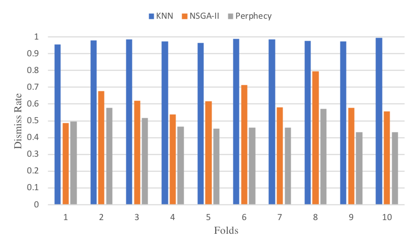
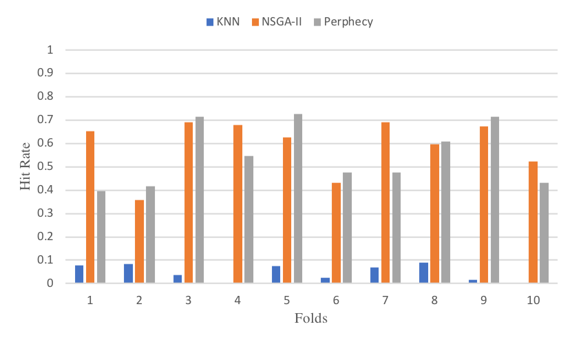
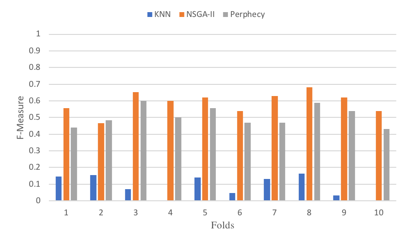
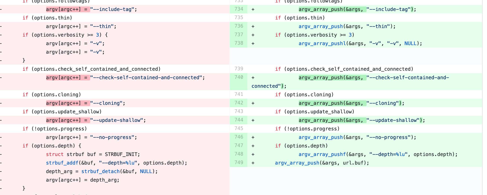
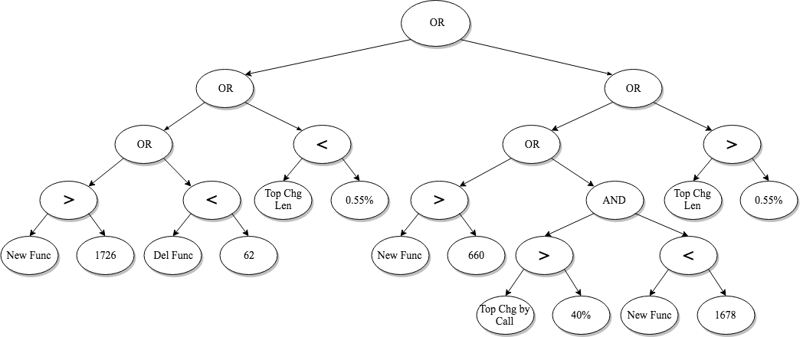
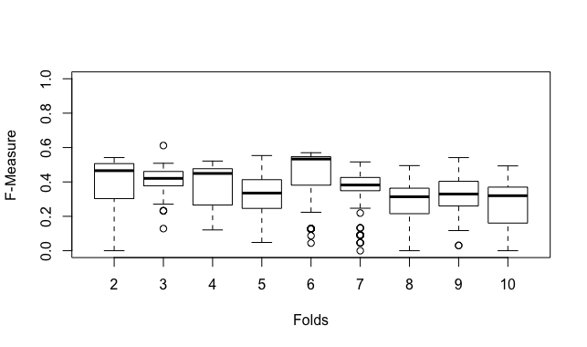

<html>
    <head>
        <title>Detecting Performance Regression by Combining Static and Dynamic metrics Using Evolutionary Algorithms</title>
        <link rel="stylesheet" href="https://stackpath.bootstrapcdn.com/bootstrap/4.1.3/css/bootstrap.min.css" integrity="sha384-MCw98/SFnGE8fJT3GXwEOngsV7Zt27NXFoaoApmYm81iuXoPkFOJwJ8ERdknLPMO" crossorigin="anonymous">
     </head>
    <body>
        <header>
            <div class="navbar navbar-dark bg-primary shadow-sm">
              <div class="container d-flex justify-content-between">
                <a href="#" class="navbar-brand d-flex align-items-center">
                  <strong>Detection of Performance Regression Introducing Code Changes Using Static and Dynamic Metrics</strong>
                </a>
              </div>
            </div>
          </header>

          <main role="main">

            <section class="jumbotron text-center mb-0">
              <div class="container">
                <h1 class="jumbotron-heading">Detection of Performance Regression Introducing Code Changes Using Static and Dynamic Metrics</h1>
                <p class="lead text-muted">Paper accepted in The 11th Symposium on Search-Based Software Engineering (SSBSE 2019)</p>
              </div>
            </section>

            <section class="p-5 border-top">
                    <div class="container">
                    <h4>Abstract</h4>
                          <p align="justify">Performance regression testing is highly expensive as it delays system development when optimally conducted after each code change. Therefore, it is important to prioritize the schedule of performance tests
                          by executing them only when a newly committed change is most likely to introduce performance regression. This paper introduces a novel formulation of the detection of performance regression introducing code changes as an optimization problem. Static and dynamic metrics are combined
                          to generate a detection rule, which is being optimized in terms of its ability to flag problematic code changes, and avoid false positives. We evaluated our approach using performance issues, extracted from the Git
                          project. Results show the eectiveness of our approach in accurately detecting performance regression introducing code changes compared with state-of-the-art techniques. Moreover, our suggested detection rules were found to be robust to the software changes over time, which reduces the
                          overhead of updating them frequently.</p>
                    <h4>Keywords</h4>
                      <p align="justify">Performance regression, multi-objective optimization, software testing, software quality</p>
<!--added by Amal-->

                  <ol>
                    <h4><li>Introduction</li></h4>
                          <p align="justify">Performance is critical to software quality. Being one of the practices
                          of quality assurance, performance regression testing monitors the software's overall performance during its evolution to ensure least to negligible degradation of time. It mainly detects whether any committed changes may have introduced performance regressions.
                          Ideally, in order to prevent any code change from negatively impacting the software performance, performance tests, also known as benchmarks,
                          should be executed along with any committed change, as a sanity check.
                          However, in a real-world setting, performance tests are expensive, and with the growth in the number of committed changes, software testers
                          are constantly challenged tond the right trade-o between optimally performance testing newly introduced changes, and increasing the development overall productivity [6]. Nevertheless, executing Performance
                          testing after each commit is an expensive and lengthy process. It represents an overhead on resources and it delays programmers from further
                          development until the results of testing have been gathered [7]. As a result, performance tests are not conducted after each change on the code
                          because they consume resources [6]. This practice challenges the early finding the performance regression changes. For example, if performance
                          tests are postponed by the end of the Sprint, then developers need to commit their code throughout the cycle and hope that no performance
                          test would fail by the end; otherwise, they have to rewind all previously committed changes to debug them. In this context, various research has
                          been analyzing performance regression inducing code changes to allow their early detection, and to support the prioritization of performance
                          regression i.e., for upcoming changes to commit, if any of them exhibits characteristics that are similar to these known to have induced performance regression, then this may be a trigger, for software testers, to
                          schedule their performance tests.
                          To cope with this expensive process, recent studies focus on mining performance regression testing repositories to either support performance
                          analysis[5, 10, 1], or improve regression strategies [7, 8], or to characterize code changes that have introduced regression [11, 2]. Characterizing such
                          problematic code changes is complex since it goes beyond the static design of the code e.g., coupling and complexity, and it is reflected by the dynamic nature of the change e.g., excessive calls to external APIs, besides
                          being specic to the projects development practices, and programming languages [12].
                          This paper denes detecting Performance Regression Introducing Code Changes (PRICE) as an optimization problem. Initially, our approach
                          takes as input a set of commits that are known to be problematic, then analyzes them using static and dynamic metrics, previously used in an
                          existing study [11]. Afterward, these commits, with their corresponding metric values, are used as a training set for the Non dominated sorting
                          genetic algorithm (NSGA-II) [4], which evolves the given metrics to generate a detection rule that maximizes the detection of problematic code
                          changes. Our experiments were carried out using Git as the system under test. Ourndings show the ability of the evolutionary algorithm to
                          generate promising results, in comparison with state-of-art approaches.</p>
                    <h4><li>Methodology</li></h4>
                          <p align="justify">In this section, we give a high-level overview of our approach's workflow, then we explain how we designed NSGA-II for detecting performance regression changes.</p>
                          <ol><h4><li>Approach Overview</li></h4>
                            
                            <figcaption  align="middle">Fig. 1: Approach Overview.</figcaption>
                            <p align="justify">The goal of our approach is tond the best rule that detects PRICE.
                            The general structure is sketched in Figure 1.
                            Our approach is composed of three phases. Collection phase uses history performance tests data collected from previous commits to calculate metrics. Metrics represent collected data of each commit to the respect of
                            the previous commit. Table 1 lists static and dynamic metrics used in this work. Metrics 1,2,6 are static where the rest are both static and dynamic. The tool used to collect static metrics is Lizard code complexity
                            analyzer. Static data is afterward fed into dynamic analysis process to run benchmarks and calculate dynamic metrics.
                            The second phase after collecting metrics is generating a detection rule. Finding this rule is a multi-objective optimization problem. A Detection rule should have the highest detection of problematic commits while minimizing the detection of benign commits. The search space con-
                            tains solutions with dierent combination of metrics and a value for each metric. In this paper, we considered seven metrics from a previous study
                            [11], with which we will also compare our approach. Once a detection rule is generated, developers can apply it on each commit to detect regression
                            and decide whether to run benchmark testing or not. In case benchmark testing is applied on a commit, dynamic metrics of that commit is stored
                            on the database to help in updating detection rule in the future when rule is no longer providing good predictions.</p>

                            <caption align="middle">Table 1: Metrics Descriptions and Rationales.</caption>
                            <table style="width:100%" border="1">
                                <tr>
                                <th>#</th> <th>Description</th> <th>Rationale</th>
                                </tr>
                                <tr>
                                <td>1</td> <td>Number of deleted functions</td> <td>Deleted functions indicate refactoring, which may lead to performance changes</td>
                                </tr>
                                <tr>
                                <td>2</td> <td>Number of new functions</td> <td>Added functions indicate new functionality, which may lead to performance changes</td>
                                </tr>
                                <tr>
                                <td>3</td> <td>Number of deleted Functions reached by the benchmark</td> <td>Deleting a function which was part of the benchmark execution could lead to a performance change</td>
                                </tr>
                                <tr>
                                <td>4</td> <td>The percent overhead of the top most called function that was changed</td> <td>Altering a function that takes up a large portion of the processing time of a benchmark has a high risk of causing a performance regression because it is such a large portion of the test</td>
                                </tr>
                                <tr>
                                <td>5</td> <td>The percent overhead of the top most called function that was changed by more than 10% of its static instruction length</td> <td>Similar to metric 4, however this takes into account that the change affects a reasonable portion of the function in question. Bigger changes may mean higher risk.</td>
                                </tr>
                                <tr>
                                <td>6</td> <td>The highest percent static function length change</td> <td>Large changes to functions are more likely to cause regressions than small ones</td>
                                </tr>
                                <tr>
                                <td>7</td> <td>The highest percent static function length change that is called by the benchmark</td> <td>The same as for metric 7, but here we guarantee that the functions are actually called by the benchmark in question.</td>
                                </tr>
                            </table>
                            <h4><li>Data Collection</li></h4>
                              <p align="justify">We have selected the Git project to be the system under test of our study.
                                We have chosen Git as it is open-source, with a built-in set of benchmarks,
                                easy to compile and run (mandatory for our dynamic analysis), besides
                                our familiarity with its commands. We collected data for 8798 commits
                                originally. Those commits were chosen by executing the `git rev-parse`
                                command from the master branch at the time and going back to therst commit we couldnd which had performance tests. Across that range of commits, there were 202 commits which, for technical reasons, were
                                untestable, so we removed them. Thus in total we considered 8596 commits.
                                Afterward, for each commit, we run all performance tests, and this is for two reasons: therst one, we need to see whether any test would fail,
                                and if so, we tag the commit under test as problematic.The second reason is to dynamically prole each code change and calculate some of metrics
                                at runtime. To avoid the
                                akiness of some tests and the stochastic nature
                                of the code, we test each commit 5 times. Running all of the performance
                                tests for a single commit takes a signicant amount of time (hence the
                                need for this study), so we parallelized the task across many machines.
                                The results of the Git performance tests are reported in wall time, which
                                can be impacted by using machines with dierent clock speeds, RAM, etc.,
                                so to mitigate this we used identical Virtual machines in a proprietary
                                cloud1. The dynamic information was collected using Linux perf [3], as for
                                the static information, the list of functions and their location in the source
                                code, was collected by using the python lizard 2 tool. While intended
                                for calculating cyclomatic complexity, it also provides list of functions
                                identied in all of the sourceles in the repository for that commit. We
                                provide the dataset and tools we used for reproducibility and extension
                                purposes3.</p>

<!--partie manquante-->
                          <h4><li>Solution Representation</li></h4>
                            <p align="justify">Our solution is encoded as a tree-based rule. The leaf nodes are termed
                              'terminals' and internal nodes as 'primitives'. Primitives are logical operators that compares metric value with the threshold assigned to it respec-
                              tively. Figure 2 illustrates a solution tree that combinesve metrics and
                              their threshold values by logical operators AND and OR. Solution tree is
                              strictly typed to assure structure is not broken during the evolution.</p>
                          <h4><li>Solution Evaluation</li></h4>
                            <p align="justify">Generated rules are evaluated by two objectives, which are hit and dismiss
                              rates. This subsection denes these objectives and shows how they are conflicted.</p>
                            
                            <figcaption  align="middle">Fig. 2: Solution representation as a tree-based rule.</figcaption>
                            <p align="justify">Hit rate as an objective. The Hit rate indicates the number of cor-
                              rectly detected commits to total number of commits encountering regression. In formula 1 Hp is predicted problematic commits while H is actual
                              regression commits. Values of hit rate are between 0.0 and 1.0. Hit rate of
                              1 means that all commits encounter regression are detected. Hit rate can
                              also be 1 if all commits considered to be problematic which is not proper
                              to this type of problems.</p>
                            <p align="justify">jHp \ Hj=jHj (1)</p>
                            <p align="justify">Dismiss rate as an objective. The Dismiss rate is the number of
                              commits classied not to be introducing regression to the total actual
                              number of stable, not problematic, commits. In formula 2 Dp is predicted
                              stable commits while D is actual stable commits. Dismiss rate values
                              are between 0.0 and 1.0. Dismiss rate of value 1 indicates that all non-
                              problematic commits are correctly classied as not introducing regression.
                              Dismiss rate of 1 might indicate that all commits are not problematic. It
                              cannot be used individually as hit rate.</p>
                            <p align="justify">jDp \ Dj=jDj (2)</p>
                            <p align="justify">An optimal solution would score a hit and dismiss rate of 1. Since
                              hit and dismiss rates are conflicting, when optimizing one objective, we
                              automatically degrade the other as shown in Figure 3. Hence, we are
                              searching for near optimal solutions that should deliver a good trade-o
                              between these objectives that are meant to be maximized.</p>
                          <h4><li>Solution Variation</li></h4>
                            <p align="justify">For the crossover operator, we deploy the Simulated Binary Crossover
                             (SBX). Simulated Binary Crossover simulates single point crossover with
                             using probability density function. Crossover point is chosen randomly between 1 and the length of the chromosome. In chromosome represented
                             as tree, rule in our case, crossover is swapping tree sub-branches. New
                             trees will not necessarily be the same size as their parents. It depends on
                             crossover point position. If crossover point located close to terminal nodes
                             , one o spring might be a single metric where the other is an extended
                             tree that might have duplicated metrics with dierent threshold values.
                             As for the mutation operator, we use the Polynomial Mutation. This operator uses polynomial probability distribution to select the node to be
                             mutated. Mutation operator depends on node type to insure producing
                             a logical rule. For example, primitive nodes, which are connecting terminal nodes, should always be a comparison operator, which can be either
                             greater than or less than.
                             Fig.</p>
                            
                            <figcaption  align="middle">Fig. 3: Hit and dismiss are conflicted objectives.</figcaption>
                            <p align="justify">Choice of the final solution.
                             The multi-objective nature of the algorithm allows the choice of multiple Pareto-equivalent solutions that
                             tend to optimize one objective in comparison with the others. So, software testers can choose either to prioritize the hit rate over the dismiss rate if
                             the cost of running benchmarks is high or the allowed testing time period is relatively short; or they can favor the dismiss rate if they are afraid
                             of missing any code change introducing a performance regression, at the expense of running extra test cases. For our experiments, we have chosen
                             the solution with the highest F-Measure across various runs.</p>
                         </ol>

                            <h4><li>Experimental Setting</li></h4>
                              <ol><h4><li>Research Questions</li></h4>
                                  <p align="justify">RQ1. To what extent does NSGA-II provide better regression detection compared with other techniques?</p>
                                  <p align="justify">To address this research question, we applied the 10-fold cross validation.
                                     We initially sort the commits chronologically, then we split them into 10 equal folds where fold 1 contains the earliest (oldest) commits subset, all the way to fold 10, which contains the latest commits subset.
                                     The validation is performed using 10 iterations. In each iteration, one fold is used for testing and the rest is used for training.
                                   Note that Folds do not necessarily contain same number of problematic commits, but since the majority of folds are used for training, the training set tends to contain significantly more problematic commits, than the testing set, which does simulate real world scenarios.
                                    Results are compared with k-Nearest Neighbors algorithm (KNN) and a state-of-the-art approach called Perphecy We choose KNN to see the results of considering the problem of performance regression as a  non-parametric binary classification, where metrics represent the feature space.
                                    We also compare with Perphecy since it is available online and known to provide good results.
                                    Hit and dismiss rates and F-measure to compare the performance of the three methods.</p>
                                  <p align="justify">RQ2. Do the generated rules continue to perform well with the evolution of the software?</p>
                                  <p align="justify">This research question challenges the stability of generated rules over the evolution of the software.
                                     As software evolves, with committing a significant amount of code changes, the software may undergo several structural and functional changes, which may change the characteristics that have been previously captured by the metrics, and so it may consequently hinder the accuracy of the performance detection. To simulate such scenario, similarly to RQ1, we sort again the commits chronologically, then we split them into 10 equal folds, where the first fold contains the oldest commits, all the way to the last fold which contains the newest commits. Optimally, we aim in splitting the commits that are co-located in time into a separate fold.
                                     By generating the rule only using the oldest fold, and then testing it on the remaining folds, we intend to see whether our rule may get over time i.e.,  the further is the fold, the harder should be the rule to detect performance issues.</p>
                              <h4><li>Parameter Tuning</li></h4>
                                <p align="justify">For NSGA-II, Different values have been used for the population size and
                                    the maximum number of evaluations, generating a variety of configurations. We use the trial and error and choose the conguration providing
                                    better results in terms of hit rate and dismiss rate. We used the following parameters: Population size=50, iterations=10000, Selection=Binary
                                    tournament selection without replacement, Simulated Binary Crossover probability=0.8, Polynomial Mutation probability=0.5.
                                    Perphecy combines metrics tond the best rule that better detect performance issues in a deterministic way. Before trying all possible met-
                                    rics combinations tond the best rule, Perphecy determines each metric
                                    threshold value individually. The combination with highest hit and dismiss rate is selected. The authors of Perphecy applied this process for
                                    each project separately, as every project has its own characteristics and so the nominated rule diers from project to another. In this context, we
                                    did not reuse any existing rules from the previous study and we had to generate a rule for each subset of commits, from Git project.
                                    For KNN, we use the gap statistic method to estimate the optimal number of clusters K. Gap statistic is chosen since it provides a statistical
                                    procedure to model traditional elbow and silhouette methods. To ensure fairness when compared to NSGA-II and Perphecy, we re-estimate K for
                                    each set of input commits.
                                    Since our experiments contain a fold cross validation, we tune the
                                    algorithms together once, for therst fold. To ensure fairness, we regenerate a rule representing each algorithm for every training fold, as we will
                                    detail later.</p>
                            </ol>
                            <h4><li>Results</li></h4>
                              <ol><h4><li>RQ1. To what extent does NSGA-II provide better regression detection compared with other techniques?</li></h4>
                                
                                
                                <figcaption  align="middle">Fig. 5: Hit Rate, and Dismiss Rate of KNN, Perphecy and NSGA-II, on 10-folds.</figcaption>
                                  <p align="justify">In order to compare performance of NSGA-II with KNN and Perphecy, we plotted hit rate, dismiss rate and F-measure of each technique.
                                    In this cross-validation, each fold has been tested with a rule, which was
                                    created using the remaining folds as the training set. In Figure 5, the hit
                                    rate represents correctly classied commits while the dismiss rate repre-
                                    sents correctly avoided commits. According to Figure 5 results, KNN's
                                    hit rate is very low, and only reached 10% at most, so it highly miss-
                                    classies commits with regression in contrast with a more successful dis-
                                    miss rate where more than 95% of benign commits have been correctly
                                    classied. This is due to the imbalance between the two class represen-
                                    tations: commits encounter regression are only about 4% of the overall
                                    commits. Although, this imbalanced setting represents a challenge for ma-
                                    chine learning algorithms, it mimics naturally the real setting for typical
                                    software projects, where performance regression tends to be less frequent
                                    but critical to software health [7].
                                    Perphecy also combines metrics tond the best rule that better detect
                                    performance issues in a deterministic way. Before trying all possible met-
                                    rics combinations tond the best rule, Perphecy determines each metric
                                    threshold value individually. The combination with highest hit and dis-
                                    miss rate is selected. The authors of Perphecy applied this process for
                                    each project separately, as every project has its own characteristics and
                                    so the nominated rule diers from project to another. In this context we
                                    applied Perphecy approach in Git project to compare it with our results.</p>
                                    
                                    <figcaption  align="middle">Fig. 6: F-measure of KNN, Perphecy and NSGA-II, on 10-folds.</figcaption>
                                  <p align="justify">This approach has provided signicantly better results than KNN
                                    since its hit rate, across folds, varies between 39%, and 72%, as for the
                                    dismiss rate, it ranges between 42% and 58%. Perphecy is independent of
                                    the naive aggregation of all values, and so it clearly outperforms KNN, since its F-Measure goes up to 68% while KNN achieved an F-Measure
                                    of 17% at best.
                                    NSGA-II's performance was competitive to Perphecy, since its hit
                                    rate is between 35%, and 69%, which is slightly below Perphecy's hit
                                    rate, and for the dismiss rate, it ranges between 48% and 79%, which was
                                    slightly above Perphecy's dismiss rate. As for the F-Measure, as shown
                                    in Figure 6, NSGA-II 's values are between 47%, and 68%, and it also
                                    outperforms Perphecy, in all folds, expect for the second one. The main
                                    difference between NSGA-II and Perphecy is the ability of the latter to
                                    change the threshold values while composing the decision tree, besides the
                                    global exploration of NSGA-II for many possible competing rules during
                                    its evolutionary process.</p>
                                    
                                    <figcaption  align="middle">Fig. 7: An example of performance regression introducing code change.</figcaption>
                                    
                                    <figcaption  align="middle">Fig. 8: Subset of a solution extracted from the Pareto front.</figcaption>
                                  <p align="justify">To show a concrete example of one4 of the problematic commits, Figure 7 shows its contrast with previous commits.
                                     As shown in Figure 7, the deleted lines of code (in red) is the conventional operation of assigning a
                                    value to a particular index of an array which is a fast way of adding values in an array. This operation was replaced, as shown in the added lines
                                    (in green), by adding the values through a function call and passing the
                                    value to be added as an argument. If scheduling regression tests was using
                                    a straightforward heuristic like Lines Of Code (LOC), the above-shown
                                    code will not trigger any flags as there is no addition of new lines of code.
                                    Whereas, the newly introduced statements are expensive, since for each
                                    function call, it will traverse a data structure and append the new value.
                                    This issue was captured by a rule depicted in Figure 8 (for visibility we show a subset of the tree).</p>
                                <h4><li>RQ2. Do the generated rules continue to perform well with the evolution of the software?</li></h4>
                                 <p align="justify">o evaluate generated rules stability with the evolution of the software,
                                    we used the earliest commits subset for training and the rest nine subsets
                                    for testing. Figure 9 contains the boxplot of F-Measure values of the
                                    Pareto front solutions during 31 simulation runs. As shown ingure 9,
                                    no signicant dierence on median and the 75th percentile presented on
                                    f-measure values. This indicates that generated rules were able to oer
                                    regression prediction up to the forth fold as good as the second fold. For
                                    the remaining folds, we can observe a slight decrease from the seventh
                                    until the tenth fold. Characteristics of code changes introducing regression
                                    may change with the evolution of the code. This explains the regression
                                    in the prediction. Although our rules have shown their ability to maintain
                                    a good performance across various code changes, it is recommended to
                                    update the prediction regularly.</p>
                              </ol>
                              <h4><li>Threats to Validity</li></h4>
                                <p align="justify">Internal Validity. We report on the uncontrolled factors that interfere
                                with causes and effects, and may impact the experimental results. Com-
                                mits are not necessarily sequential: The git project itself uses git as source
                                control, and employs a branching strategy with merges. If the project his-
                                tory branched and then merged, when you view the history linearly you
                                might have two commits next to each other which technically were not
                                developed sequentially when originally committed by the developer. How-
                                ever, since our approach is not dependent to the program's logic, it is a
                                problem to compare out of order commits as long as we can detect any
                                performance regression.</p>
                                
                                <figcaption  align="middle">Fig. 9: Boxplots of Pareto front solutions' F-Measure values, trained on fold 1, over 31 runs.</figcaption>
                                <p align="justify">Construct Validity. Herewith we report on certain challenges that
                                  validate whether thendings of our study re
                                  ect real-world conditions. In
                                  order to execute the performance tests for over 8000 commits in a timely
                                  manner, the task was parallelized across multiple machines. This could
                                  become a threat because the results for the performance tests are given
                                  as a time duration, which can vary based on CPU speed, number of cores,
                                  and other random variables between machines. To mitigate this, identical
                                  virtual machines were used for all performance test results, which means
                                  CPU speed, RAM, and so on were identical. Additionally, we ran each test
                                  5 separate times, such that each execution was at a dierent time of day
                                  on a dierent virtual machine. This helps mitigate other uncontrollable
                                  random noise in the results of the testing.
                                  External Validity. The prediction of performance regression was
                                  limited only to one project. The generated predictor does not necessarily
                                  give the best results for other projects. We plan on the future to apply
                                  our approach to more projects and, if possible, across more programming
                                  languages.</p>
                                  <h4><li>Related Work</li></h4>
                                   <p align="justify">Chen et al. [2] found that performance regression introducing changes is
                                    rigorous and associated with complex syndrome. As a result, the study
                                    suggests to frequently conduct performance testing rather than defer it
                                    until the end of development process. Although executing comprehensive performance testing will ease locating code change introducing perfor-
                                    mance regression, it is expensive and might delay development process.
                                    Many researches have been conducted to overcome this limitation. Huang
                                    et al. [7] argue that performance testing should be devoted to only com-
                                    mits counter performance regression rather than all commits. To achieve
                                    that they rank commits based on the probability of encountering perfor-
                                    mance regression based on a static Performance Risk Analysis (PRA).
                                    This analysis focuses on how the change is expensive and frequent. After
                                    ranking commits, based on the analysis, a comprehensive testing is con-
                                    ducted on risky commits while light testing conducted on the rest. PRA
                                    is considered a light approach because it statically estimates the risk of a
                                    code change without running the software. Perphecy [11] agrees with PRA
                                    [7] that applying comprehensive performance testing on each commit is
                                    expensive. Rather thannding the problematic commit and intensively
                                    perform regression testing on it, Perphecy insists on testing each commit
                                    but with only test suites that would detect performance regression. To
                                    determine which test suite can detect performance regression, they have
                                    implemented a predictor based on a combination of indicators built up
                                    from static and dynamic data collected from previous commits compared
                                    with static data of the new commit.</p>
                                <h4><li>Conclusion and Future Work</li></h4>
                                 <p align="justify">We presented a novel formulation of the early detection of performance
                                  regression as multi-objective optimization problem. We used NSGA-II to
                                  generate a detection rule, while maximizing the correctness of hitting a
                                  regression and maximizing the correctness of dismissing a non-regression,
                                  as two objectives. We evaluated our detection rule by building a dataset
                                  of performance regression, extracted from the Git project. As we compare
                                  our results to other techniques, we found that our approach provides a
                                  competitive detection that improves the state-of-the-art existing results.
                                  We plan to extend this study by adding additional metrics, including
                                  branch and bound, Cyclomatic complexity, and coupling between objects,
                                  and explore more optimization algorithms, known to perform well for
                                  similar software engineering problems [9]. We plan on also analyzing more
                                  projects to challenge the generalizability of our approach.</p>
                                 <p align="justify">Acknowledgement. We would like to sincerely thank the authors
                                  of Perphecy for providing enough details that allowed its replication. We
                                  also thank the members of #git-devel IRC community for answering some
                                  of our questions during this work.</p>
                                 <p align="justify">References<br>
                                    1. Ahmed, T.M., Bezemer, C.P., Chen, T.H., Hassan, A.E., Shang, W.: Studying
                                    the eectiveness of application performance management (apm) tools for detecting
                                    performance regressions for web applications: an experience report. In: Proceedings
                                    of the 13th International Conference on Mining Software Repositories. pp. 1{12.
                                    ACM (2016)<br>
                                    2. Chen, J., Shang, W.: An exploratory study of performance regression introduc-
                                    ing code changes. In: Software Maintenance and Evolution (ICSME), 2017 IEEE
                                    International Conference on. pp. 341{352. IEEE (2017)
                                    3. De Melo, A.C.: The new linuxperftools. In: Slides from Linux Kongress. vol. 18
                                    (2010)<br>
                                    4. Deb, K., Agrawal, S., Pratap, A., Meyarivan, T.: A fast elitist non-dominated sort-
                                    ing genetic algorithm for multi-objective optimization: Nsga-ii. In: International
                                    conference on parallel problem solving from nature. pp. 849{858. Springer (2000)<br>
                                    5. Foo, K.C., Jiang, Z.M., Adams, B., Hassan, A.E., Zou, Y., Flora, P.: Mining per-
                                    formance regression testing repositories for automated performance analysis. In:
                                    2010 10th International Conference on Quality Software. pp. 32{41. IEEE (2010)<br>
                                    6. Ghaith, S., Wang, M., Perry, P., Murphy, J.: Prole-based, load-independent
                                    anomaly detection and analysis in performance regression testing of software sys-
                                    tems. In: Software Maintenance and Reengineering (CSMR), 2013 17th European
                                    Conference on. pp. 379{383. IEEE (2013)<br>
                                    7. Huang, P., Ma, X., Shen, D., Zhou, Y.: Performance regression testing target pri-
                                    oritization via performance risk analysis. In: Proceedings of the 36th International
                                    Conference on Software Engineering. pp. 60{71. ACM (2014)<br>
                                    8. Luo, Q., Poshyvanyk, D., Grechanik, M.: Mining performance regression inducing
                                    code changes in evolving software. In: Mining Software Repositories (MSR), 2016
                                    IEEE/ACM 13th Working Conference on. pp. 25{36. IEEE (2016)<br>
                                    9. Mkaouer, W., Kessentini, M., Shaout, A., Koligheu, P., Bechikh, S., Deb, K., Ouni,
                                    A.: Many-objective software remodularization using nsga-iii. ACM Transactions on
                                    Software Engineering and Methodology (TOSEM) 24(3), 17 (2015)<br>
                                    10. Nguyen, T.H., Adams, B., Jiang, Z.M., Hassan, A.E., Nasser, M., Flora, P.: Auto-
                                    mated detection of performance regressions using statistical process control tech-
                                    niques. In: Proceedings of the 3rd ACM/SPEC International Conference on Per-
                                    formance Engineering. pp. 299{310. ACM (2012)<br>
                                    11. Oliveira, A.B.d., Fischmeister, S., Diwan, A., Hauswirth, M., Sweeney, P.F.: Per-
                                    phecy: Performance regression test selection made simple but eective. In: 2017
                                    IEEE International Conference on Software Testing, Verication and Validation
                                    (ICST). pp. 103{113. IEEE (2017)<br>
                                    12. Ostermueller, E.: Troubleshooting Java Performance: Detecting Anti-Patterns with
                                    Open Source Tools. Apress, Berkely, CA, USA, 1st edn. (2017)</p>
                      </ol>


                    </div>
            </section>

            <section class="p-5 border-top">
                    <div class="container">
                    <h4>Abstract</h4>
                       
                    </div>
            </section>

            <section class="p-5 border-top">
                    <div class="container">
                    <h3>Video Tutorial of User Review Classification</h3>
<iframe width="560" height="315" src="https://www.youtube.com/embed/fmEG2sxDR_8" frameborder="0" allow="accelerometer; autoplay; encrypted-media; gyroscope; picture-in-picture" allowfullscreen></iframe>
                    </div>
            </section>

            <section class="border-top p-5">
                <div class="container">
                    <h3>List of adopted projects that were randomly selected from Github:</h3>
                    <table class="table">
                        <thead class="thead-dark">
                          <tr>
                            <th scope="col">Applications</th>
                            <th scope="col">Source</th>
                          </tr>
                        </thead>
                        <tbody>
                          <tr>
                            <th scope="row">geocaching</th>
                            <td><a href="https://github.com/cgeo/cgeo">https://github.com/cgeo/cgeo</a></td>
                          </tr>
                          <tr>
                            <th scope="row">anuto</th>
                            <td><a href="https://github.com/reloZid/android-anuto">https://github.com/reloZid/android-anuto</a></td>
                          </tr>
                          <tr>
                            <th scope="row">adam.aslfms</th>
                            <td><a href="https://github.com/tgwizard/sls.git">https://github.com/tgwizard/sls.git</a></td>
                          </tr>
                          <tr>
                            <th scope="row">amaze.filemanager</th>
                            <td><a href="https://github.com/arpitkh96/AmazeFileManager">https://github.com/arpitkh96/AmazeFileManager</a></td>
                          </tr>
                          <tr>
                            <th scope="row">android.reddit</th>
                            <td><a href="https://github.com/talklittle/reddit-is-fun.git">https://github.com/talklittle/reddit-is-fun.git</a></td>
                          </tr>

                          <tr>
                            <th scope="row">android.keepass</th>
                            <td><a href="https://github.com/bpellin/keepassdroid.git">https://github.com/bpellin/keepassdroid.git</a></td>
                          </tr>
                          <tr>
                            <th scope="row">faircode.netguard</th>
                            <td><a href="https://github.com/M66B/NetGuard">https://github.com/M66B/NetGuard</a></td>
                          </tr>
                          <tr>
                            <th scope="row">fastaccess.github</th>
                            <td><a href="https://github.com/k0shk0sh/FastHub">https://github.com/k0shk0sh/FastHub</a></td>
                          </tr>
                          <tr>
                            <th scope="row">ccrama.redditslide</th>
                            <td><a href="https://github.com/ccrama/Slide">https://github.com/ccrama/Slide</a></td>
                          </tr>
                          <tr>
                            <th scope="row">mozilla.mozstumbler</th>
                            <td><a href="https://github.com/mozilla/MozStumbler.git">https://github.com/mozilla/MozStumbler.git</a></td>
                          </tr>
                          <tr>
                            <th scope="row">org.videolan.vlc</th>
                            <td><a href="https://github.com/mozilla/MozStumbler.git">https://code.videolan.org/videolan/vlc-android.git</a></td>
                          </tr>
                        </tbody>
                      </table>
                </div>
            </section>


          </main>

          <footer class="text-muted">
            <div class="container">
              <p class="float-right">
                <a href="#">Back to top</a>
              </p>
              <p>Author: Mohamed Wiem Mkaouer</p>
            </div>
          </footer>
        <script src="https://code.jquery.com/jquery-3.3.1.slim.min.js" integrity="sha384-q8i/X+965DzO0rT7abK41JStQIAqVgRVzpbzo5smXKp4YfRvH+8abtTE1Pi6jizo" crossorigin="anonymous"></script>
        <script src="https://cdnjs.cloudflare.com/ajax/libs/popper.js/1.14.3/umd/popper.min.js" integrity="sha384-ZMP7rVo3mIykV+2+9J3UJ46jBk0WLaUAdn689aCwoqbBJiSnjAK/l8WvCWPIPm49" crossorigin="anonymous"></script>
        <script src="https://stackpath.bootstrapcdn.com/bootstrap/4.1.3/js/bootstrap.min.js" integrity="sha384-ChfqqxuZUCnJSK3+MXmPNIyE6ZbWh2IMqE241rYiqJxyMiZ6OW/JmZQ5stwEULTy" crossorigin="anonymous"></script>
    </body>
</html>
